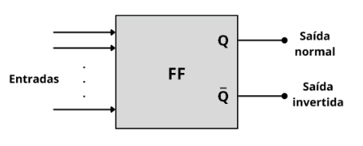
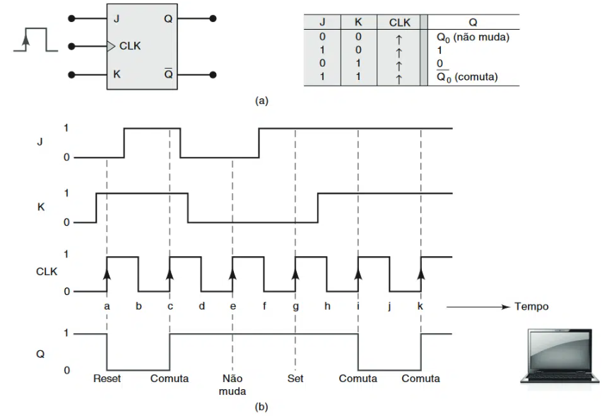
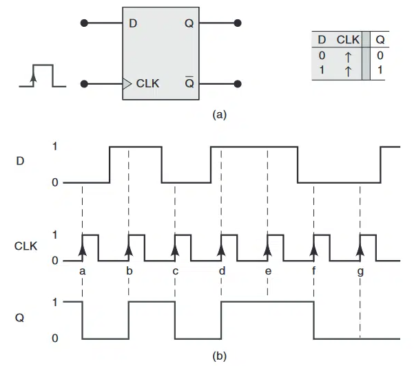

◉ flip-flop
➤ Até agora os circuitos lógicos estudados são classificados como combinacionais,
pois o nível lógico de saída, em qualquer instante de tempo, depende somente dos níveis
lógicos de entrada naquele mesmo instante. Não há influência de nenhuma condição de entrada
anterior sobre as saídas atuais, já que os circuitos combinacionais não possuem memória.
Na maioria dos sistemas digitais, há a presença de circuitos combinacionais e elementos de
memória. O flip-flop é o componente de memória mais importante e é constituído por um conjunto
de portas lógicas interconectadas. Embora uma única porta lógica não possua capacidade de
armazenamento, algumas delas podem ser conectadas de maneira a permitir guardar informações.
➤ Flip Flops
A realimentação é um conceito crucial da engenharia que permite conectar certas saídas de portas
lógicas de volta às entradas de portas lógicas correspondentes para criar elementos de memória.
Na eletrônica, a realimentação tem diversas aplicações. Existem diferentes arranjos de portas
lógicas utilizados para gerar os flip-flops (FFs).
Na Figura, é apresentado um símbolo genérico utilizado para representar um flip-flop, o qual
possui duas saídas, Q e Q invertido. Q/Q ou ainda Q/Q’ é a nomenclatura mais comum para
identificar as saídas dos flip-flops, embora outras designações como X/X’ ou A/A’ também possam
ser utilizadas para facilitar a identificação de diferentes flip-flops em um circuito lógico.

Um flip-flop pode ter uma ou mais entradas usadas para fazer com que ele alterne entre seus
possíveis estados de saída.
A maioria das entradas dos flip-flops precisa ser apenas momentaneamente ativada (pulsada)
para provocar a mudança de estado na saída do flip-flop, sendo que a saída permanece no novo
estado mesmo após o pulso de entrada terminar. Essa é a característica de memória dos flip-flops.
Com relação saída Q é considerada a saída normal do flip-flop, enquanto a saída /Q é a saída
invertida do FF. Sempre que mencionamos o estado do flip-flop, estamos nos referindo ao estado
da saída normal (Q). É importante destacar que o estado de Q é sempre o inverso do estado de Q’.
Por exemplo, se dissermos que um flip-flop está no estado ALTO (1), estamos nos referindo a Q = 1,
enquanto o estado de Q’ é 0. De maneira análoga, se um flip-flop estiver no estado BAIXO (0),
isso significa que Q = 0, enquanto Q’ será igual a 1.
Existem dois estados possíveis de operação para um flip-flop:
O estado ALTO ou 1 (Q = 1/Q’ = 0) também é conhecido como estado SET.
Sempre que os níveis nas entradas de um flip-flop fazem sua saída ir para o estado Q = 1,
dizemos que o flip-flop foi setado.
O estado BAIXO ou 0 da saída (Q = 0/Q’ = 1) é denominado CLEAR ou RESET.
Sempre que os níveis nas entradas do flip-flop fazem sua saída ir para o estado Q = 0,
dizemos que o flip-flop foi resetado.
➤ Flip-flop J-K
O flip-flop J-K na Figura é disparado por borda de subida do sinal de clock e possui as
entradas J e K que controlam o estado lógico do FF. O modo de comutação (toggle mode) ocorre
quando J = K = 1, fazendo com que o FF mude para o estado lógico oposto no instante da borda
de subida do sinal de clock.
A tabela-verdade para esse flip-flop é a mesma do flip-flop S-R com clock, exceto
para a condição J = K = 1, onde Q = Q0 e a saída Q terá seu valor invertido.
A operação desse FF é ilustrada pelas formas de onda na Figura, onde a mudança de estado
ocorre somente nos instantes em que ocorrem as bordas positivas do sinal de clock.
As entradas J e K sozinhas não são capazes de fazer o FF mudar de estado lógico e o
FF não é afetado pelas bordas negativas dos pulsos de clock como ocorria no flip flop S-R.

O símbolo de um flip-flop J-K acionado na borda negativa do sinal de clock conta com um
pequeno círculo na entrada CLK para indicar que esse flip-flop é acionado quando a entrada
CLK é alterada de 1 para 0. Esse tipo de flip-flop funciona da mesma maneira que o flip-flop
acionado na borda de subida, mostrado na Figura, com a diferença de que a mudança de
estado da saída ocorre somente nas bordas de descida do sinal de clock (pontos b, d, f, h e j).
Ambos os tipos de flip-flops J-K são comumente usados.
Comparado com o S-R, o flip-flop J-K é mais versátil, pois não possui estados ambíguos.
A condição J = K = 1, que causa a operação de comutação da saída, é amplamente utilizada
em todos os tipos de contadores binários. Em resumo, o flip-flop J-K pode realizar todas
as funções do S-R, além de operar no modo de comutação.
➤ Flip-flop D
Por fim o flip-flop D, cujo símbolo e tabela-verdade são mostrados na Figura.
Esse tipo de flip-flop é disparado na borda de subida do clock e possui apenas uma entrada
de controle síncrona, a entrada D, que representa a palavra data (dado). Quando ocorre uma
borda de subida do clock, a saída Q assume o mesmo valor lógico presente na entrada D.
As formas de onda apresentadas na Figura ilustram essa operação.

Inicialmente, suponha que a saída Q esteja em nível ALTO. Quando ocorre a primeira borda de
subida do clock (ponto a), a entrada D é nível BAIXO, fazendo com que a saída Q vá para o
estado 0. Mesmo que o nível lógico na entrada D mude entre os pontos a e b, isso não afeta a
saída Q, que armazena o nível BAIXO presente na entrada D no ponto a. Quando ocorre uma borda
de subida do clock em b, a saída Q assume o valor lógico presente na entrada D, que é nível
ALTO nesse instante. A saída Q armazena esse nível ALTO até que uma borda de subida do clock
em c faça com que a saída Q vá para o nível BAIXO, visto que a entrada D é nível BAIXO nesse
instante. De modo similar, a saída Q assume o nível lógico presente na entrada D, quando
ocorrem as bordas de subida do clock nos pontos d, e, f e g. É importante ressaltar que a
saída Q só muda de estado quando ocorre uma borda de subida no clock, e a entrada D não tem
efeito entre essas bordas.
Um flip-flop D disparado por borda de descida opera da mesma maneira que o flip-flop D
disparado por borda de subida, com a diferença de que a saída Q assume o valor da entrada D
quando ocorre uma borda de descida em CLK. O símbolo para o flip-flop D disparado por bordas
negativas possui um pequeno círculo na entrada CLK.